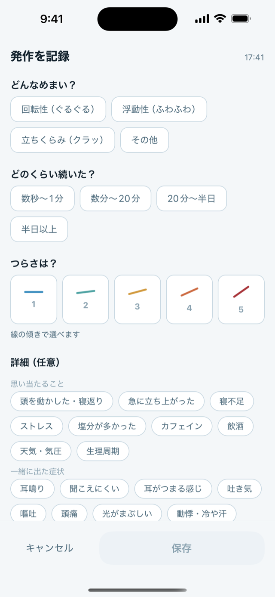
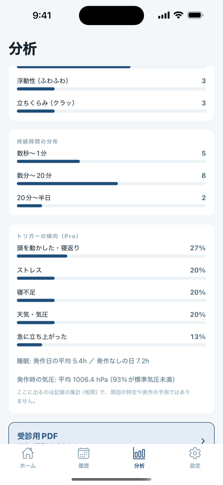

発作が起きているあいだに、書き留めておく。
回転性・浮動性・立ちくらみの発作を3タップで記録して、受診用の1つのPDFにまとめて渡せます。メニエール病・BPPVに。

めまい記録レポート 7月9日 – 8月7日
9発作回数
9発作のあった日数
2.9平均の強さ
| 日時 | 種類 | 強さ |
|---|---|---|
| 8月7日 7:15 | 回転性 | 3 |
| 8月5日 14:15 | 浮動性 | 2 |
| 8月2日 9:15 | 回転性 | 4 |
ほか6件
本人が記録した内容の一覧で、診断や医学的評価は含みません。
発作の最中に
聞かれるのは3つだけ
大きなボタンを1回ずつ。文字は打ちません。ほかは全部あとから足せます。
気圧と天気
同じ時間軸に、並べるだけ
ここに出るのは記録の集計で、原因の特定や発作の予測ではありません。

無料とPro
| 無料・期限なし | Pro・買い切り |
|---|---|
| 記録とタイマー | 受診用PDF |
| 履歴とカレンダー | CSV書き出し |
| 気圧の予報 | トリガーの傾向 |
記録は全部無料
広告も試用期限もサブスクリプションもありません。
データの置き場所
端末の中だけ
サーバーがないので、アカウントもありません。
記録のためのアプリで、医療機器ではありません。診断も予測もしません。
- 初めての、急な、強いめまいは医師にご相談ください。
- 胸の痛み、片側の脱力、ろれつが回らない、ものが二重に見える、突然の難聴があるときは緊急です。ただちに受診してください。